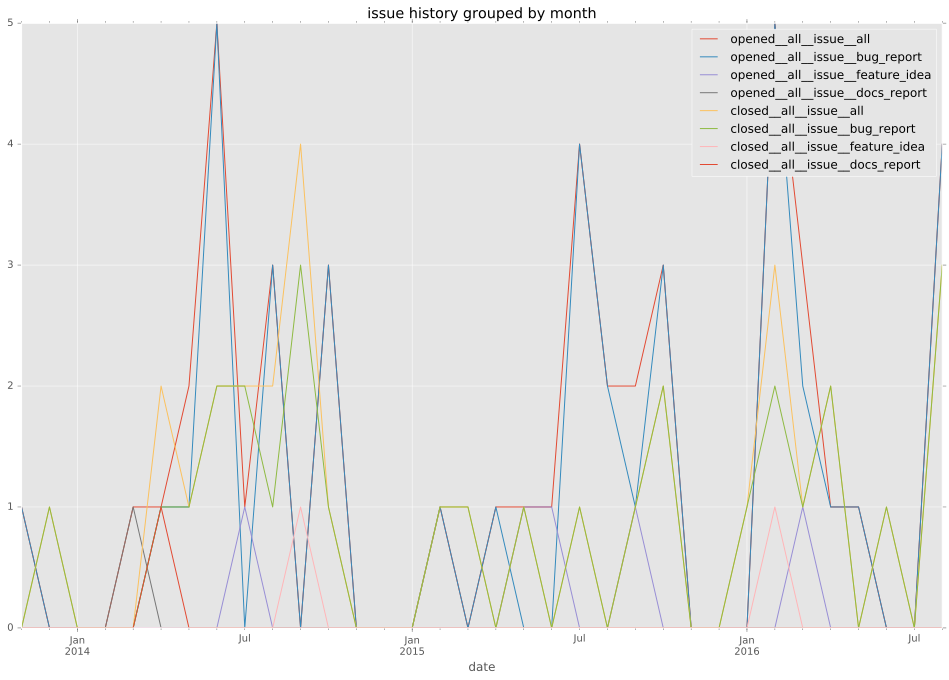
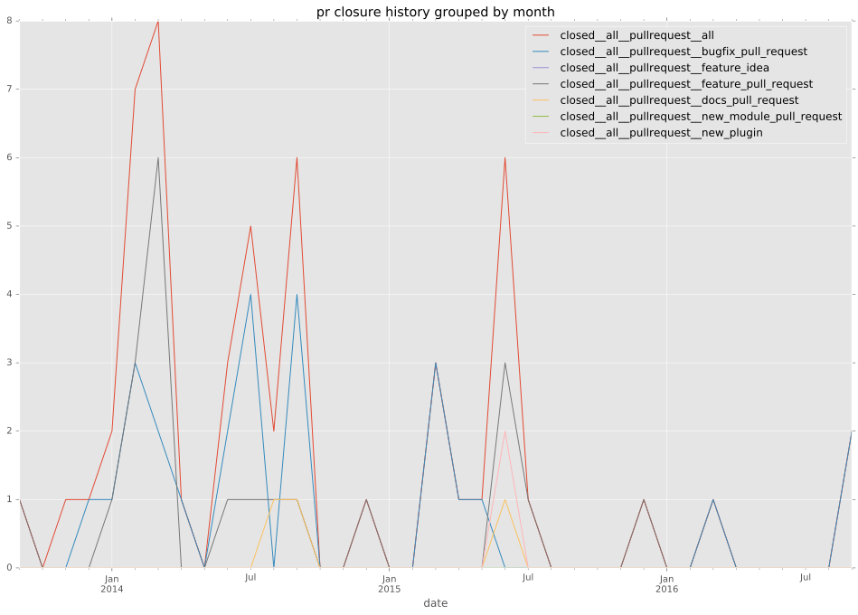
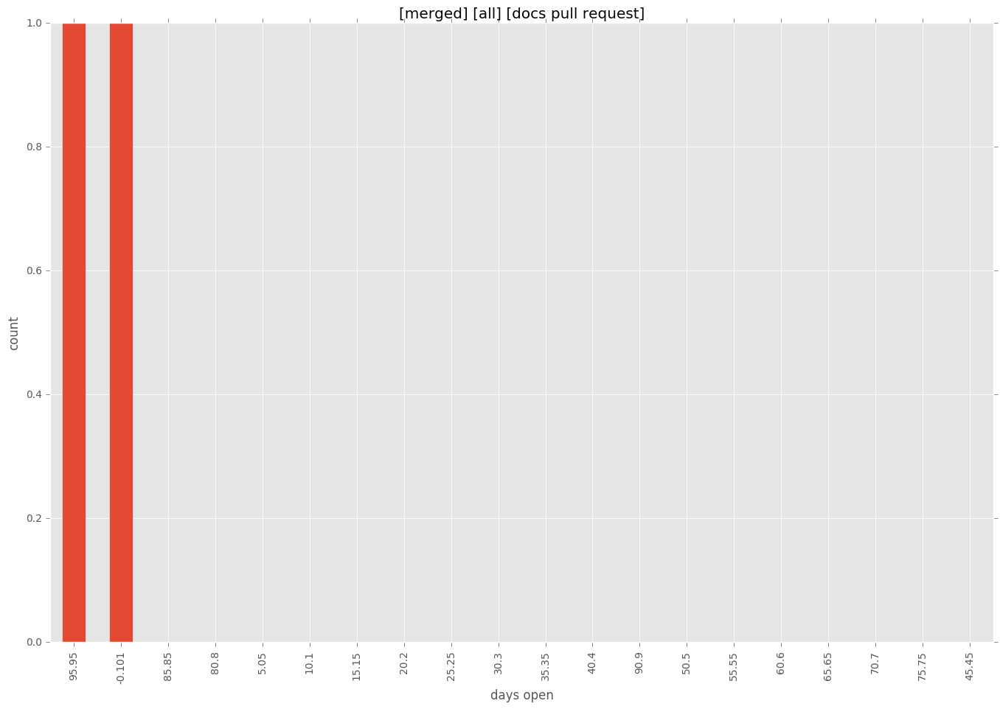

authors
- carsongee
maintainers
- carsongee
contributors
- carsongee : 64 commits
- ap1kenobi : 28 commits
- psa : 24 commits
- jimi-c : 24 commits
- Hypermanzer : 12 commits
- ryannealmes : 8 commits
- risaacson : 7 commits
- feanil : 7 commits
- andynelson : 7 commits
- autotune : 5 commits
- bcoca : 4 commits
- steenzout : 3 commits
- mpdehaan : 3 commits
- semifocused : 2 commits
- scottanderson42 : 2 commits
- mike-d-d : 2 commits
- kwoodson : 2 commits
- jctanner : 2 commits
- gundalow : 2 commits
- cgar : 2 commits
- willthames : 1 commits
- sankalp-khare : 1 commits
- bretmartin : 1 commits
- abadger : 1 commits
total issue counts
feature pull request: 27
docs report: 2
pullrequest: 58
docs pull request: 3
bugfix pull request: 28
feature idea: 8
issue: 48
bug report: 38
issue history

pullrequest history

days open by issue type
bugfix pull request
count: 43
std: 47.8207709589
min: 0
max: 307
median: 2.0
mean: 16.4651162791
all
count: 115
std: 74.2365978731
min: 0
max: 329
median: 9.0
mean: 44.4347826087
pullrequest
count: 0
std: nan
min: nan
max: nan
median: nan
mean: nan
docs pull request
count: 5
std: 65.850588456
min: 0
max: 145
median: 101.0
mean: 69.4
docs report
count: 1
std: nan
min: 24
max: 24
median: 24.0
mean: 24.0
feature pull request
count: 32
std: 78.5133797926
min: 0
max: 246
median: 36.0
mean: 69.1875
feature idea
count: 4
std: 107.245435023
min: 0
max: 228
median: 38.5
mean: 76.25
issue
count: 0
std: nan
min: nan
max: nan
median: nan
mean: nan
bug report
count: 30
std: 88.5467342025
min: 0
max: 329
median: 4.5
mean: 50.4
closures grouped by total days open
